New Java Language Features
The release notably includes the following Java features:
JEP 467: Markdown Documentation Comments
JEP 455: Primitive Types in Patterns, instanceof, and switch (Preview)
JEP 476: Module Import Declarations (Preview)
JEP 477: Implicitly Declared Classes and Instance Main Methods (Third Preview)
JEP 482: Flexible Constructor Bodies (Second Preview)
Java Editor
To use the clean-up, go to the Code Style tab of the clean-up configuration dialog under Control statements and select: Simplify boolean if/else to single return if possible.
For example, applying the clean-up to the following code:
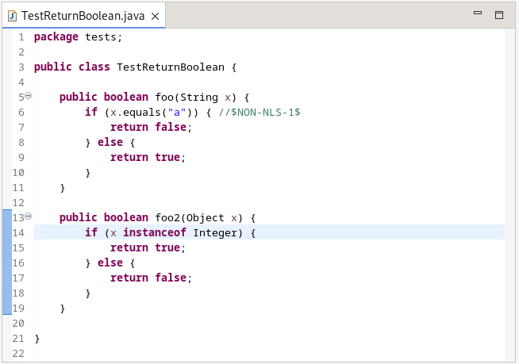
results in:
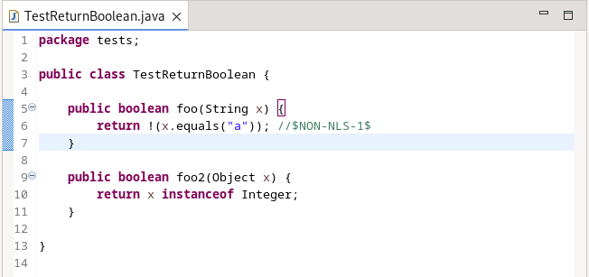
- unused lambda parameters
- unused try-with-resources resources
- unused pattern variables in switch
- unused variables in enhanced for statement
- unused variables in regular for statement
In these cases, a quick-fix will be offered to rename to the unnamed variable. The quick-fix is a multi-fix and will also offer to fix multiple instances of the problem.
For example, hovering one of the unused variables in the file will show:
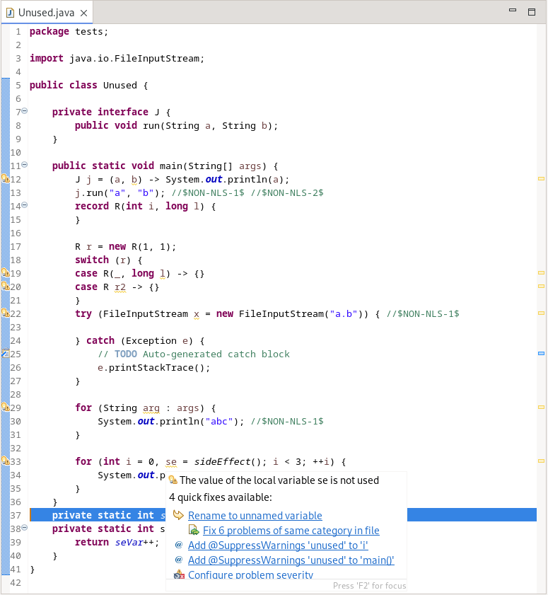
and selecting to fix multiple problems of the same category results in:
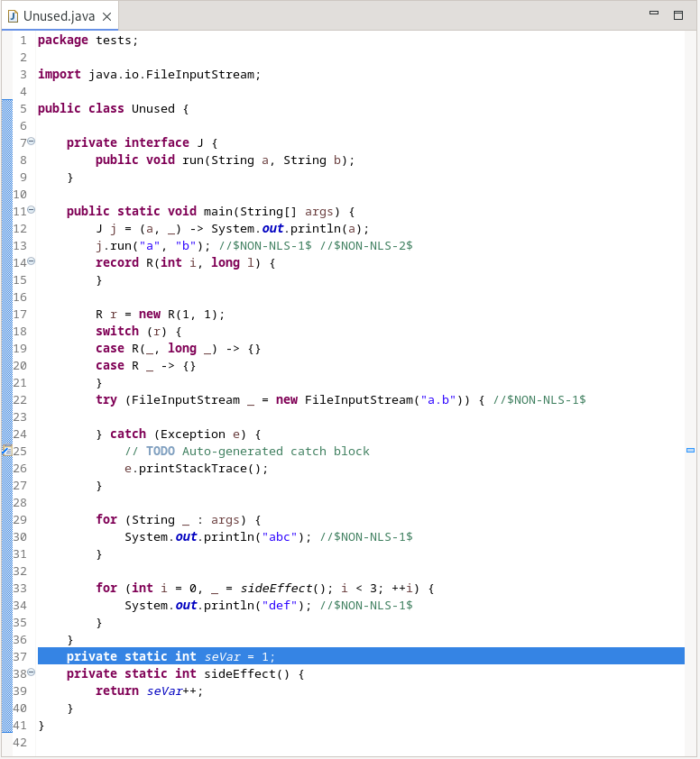
The new rename functionality is embedded into the existing Remove unused local variables clean-up found on the Unnecessary Code tab of the clean-up configuration dialog. The clean-up will rename to the unnamed variable for unused locals or lambda parameters when the compliance level is 22 or above.
The clean-up is accessed on the Code style tab of the clean-up configuration dialog under Control statements and selecting: Convert if/else if/else chain with 3 blocks min to switch.
Applying the clean-up to the following code:
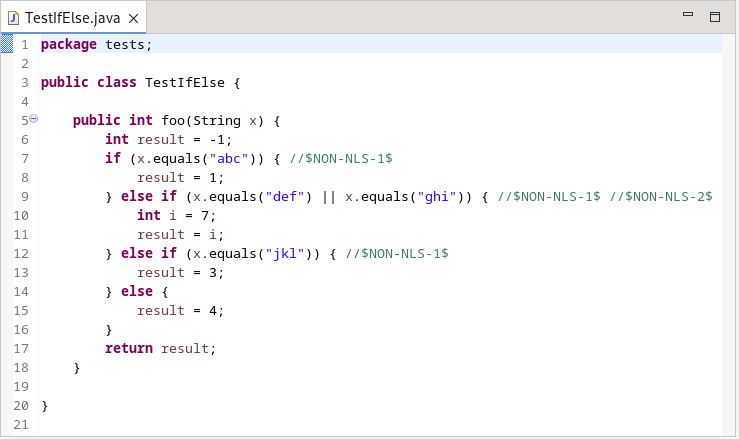
results in the following when Java version is less than 21
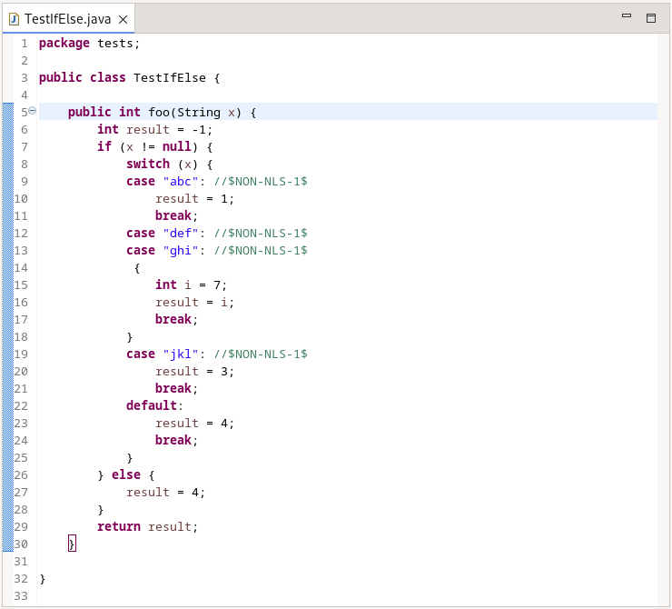
and results in the following when the Java release is set to 21 and up:
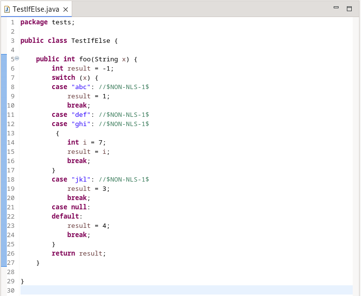
Java Views and Dialogs
In this release, JDT has added HTML parsing and rendering support for markdown documentation comments on Java programming elements. This comes as a standard feature at source level 23. The HTML rendering is provided both on hover and Javadoc view.
Here are some examples of how the markdown comments get rendered:
Hovering in the editor:

Javadoc View:
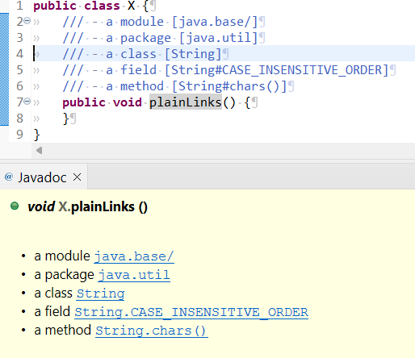
This change helps filtering your results after calling the Call Hierarchy on a method. With more filter options that are also much more understandable, you can filter your results much better than before.
In the following picture you can see the new filter Options!
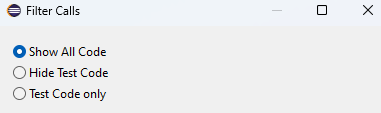
Thanks to this change, you can easily access the filters after calling the call hierarchy on a method. With the new, more accessible filters button, changing the filters is easier than ever, especially now that there are more and better options to filter the results.
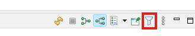
You can still use the old way to access the filter like so:
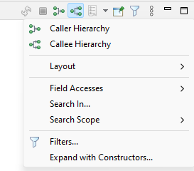
Java Compiler
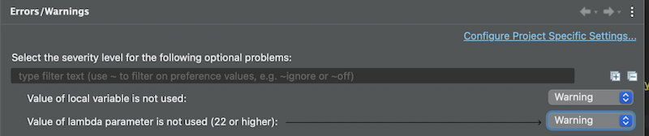